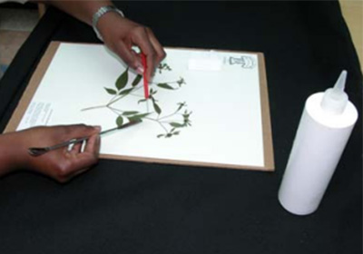

Herbarium Making Tutorials
Collecting
Here are some important things to note when collecting specimens:
- Record essential details in a notebook, such as scientific name, habitat, collector information, etc.
- Pack the specimens using moistened newspapers and plastic bags to maintain freshness.
- Use trowel, clipper and (pruning) knife as tools to collect specimens.
- Use your own body (knee, shoulder, stretch of fingers) to estimate plant height.
- For small plants, collect the entire plant, while for large ones, include parts that showing their growth habits.
Pressing
Detailed Structure of Herbarium Press
1st step: Specimen Arrangement
- Arrange carefully before pressing
- Shake leaves gently for natural positions
2nd step: Dry the Specimen
- Handle newspaper and enclosed plant as a single unit to dry together
- Use absorbent blotters to remove moisture, replace them multiple times as needed
3rd step: Press the Specimen
- Use a wooden press with layers of corrugated cardboard and blotters
- Position the press correctly
- Tighten press straps and slats
4th step: Expedite Drying
- Use simple drier like light bulbs or space heaters to speed up drying
- Natural sunlight also can be used but should be monitored to avoid overheating
5th step: Freezing
- After drying, freeze specimens at -20°F (-29°C) for 2-5 days to kill insects before mounting
- Store dried specimens in a cool, dry place to prevent further damage
Labelling
Example of a Herbarium Label
Things you should label:
- Title
- Scientific name
- Detailed Location
- Altitude & Habitat
- Collector name
- Specimen number
- Date of Collection
- Notes
Mounting
Spatula & Needle Method
1st step: Prepare the workspace
- Place a cardboard backing under a mounting paper.
- Prepare the tools needed.
- Carefully open the newspaper containing the dried plant specimen and its label.
2nd step: Arrange the specimen
- Place the root side down and the flower side up, making sure the entire specimen is within the paper.
- Leave the bottom right corner for the label and the other corner for the pocket.
3rd step: Position metal washers
- Remove excess soil and foreign material from plants by tapping or poking the soil area lightly with needle.
- Use metal washers to hold down plant parts that need to stay in place.

4th step: Apply glue
- Use spatula to apply a small amount of glue under plant parts.
- Lift parts of the plant with an angled needle when applying the glue. Do not over-glued.
5th step: Drying process
- After gluing, place wooden blocks at each corner of the sheet.
- Stack multiple sheets on top of each other using wooden blocks for separation.
- Let the sheets dry for 24 hours.
6th step: Final touch
- Perform the "flip-over" test to check if any plant parts come loose.
- Apply minimum glue to those parts which flop and let it to dry again.
- If no flopping occurs, carefully remove cardboard sheet, and the specimen is now ready for filing.
Dip Method
1st step: Set up materials
- Place a cardboard backing under a mounting paper.
- Prepared a metal tray covered with heavy-duty aluminium foil.
- Gather plant specimens and prepare the tools needed.
2nd step: Position the specimen
- Place important features such as flowers in a prominent place.
- Place the label and packet in appropriate corners.
3rd step: Dip the plant in glue
- Dilute Missouri-type archival glue with water in the foil-covered tray to create a thin layer.
- Carefully lift the plant with forceps and dip it into the glue.
4th step: Place the specimen on paper
- Gently lift the plant out of the glue, and without rearranging too much, "drop" it onto the herbarium sheet.
- Ensure no glue smudges are left behind.
5th step: Dry the specimen
- Place a sheet of wax paper over the specimen and stack the sheets without using weights or blocks.
- Tighten the press straps and leave the specimens to dry overnight.
6th step: Final check
- Perform the "flip-over" test after drying to see if any plant parts hang loose.
- Apply minimum glue if necessary and then store the completed specimen.